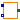
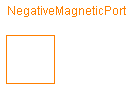
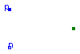

This package contains connectors for the magnetic domain, partial models for lumped magnetic network components and a partial model with connectors for a one-phase electro-mechanical translatory actuator.
| Name | Description |
|---|---|
| MagneticPort | Generic magnetic port |
| PositiveMagneticPort | Positive magnetic port |
| NegativeMagneticPort | Negative magnetic port |
| TwoMagneticPorts | Partial component with two magnetic ports p and n |
| TwoPortComponent | Partial component with magnetic potential difference between two magnetic ports p and n and magnetic flux Phi from p to n |
|  ElectromechanicalActuator | Connectors of a generic translatory actuator with one electrical phase |
| Type | Name | Description |
|---|---|---|
| MagneticPotential | V_mag | Magnetic potential at the port [A] |
| flow MagneticFlux | Phi | Magnetic flux flowing into the port [Wb] |
connector MagneticPort "Generic magnetic port" SI.MagneticPotential V_mag "Magnetic potential at the port"; flow SI.MagneticFlux Phi "Magnetic flux flowing into the port"; end MagneticPort;
| Type | Name | Description |
|---|---|---|
| MagneticPotential | V_mag | Magnetic potential at the port [A] |
| flow MagneticFlux | Phi | Magnetic flux flowing into the port [Wb] |
connector PositiveMagneticPort "Positive magnetic port" SI.MagneticPotential V_mag "Magnetic potential at the port"; flow SI.MagneticFlux Phi "Magnetic flux flowing into the port"; end PositiveMagneticPort;

| Type | Name | Description |
|---|---|---|
| MagneticPotential | V_mag | Magnetic potential at the port [A] |
| flow MagneticFlux | Phi | Magnetic flux flowing into the port [Wb] |
connector NegativeMagneticPort "Negative magnetic port" SI.MagneticPotential V_mag "Magnetic potential at the port"; flow SI.MagneticFlux Phi "Magnetic flux flowing into the port"; end NegativeMagneticPort;
Partial model of a flux tube component with two magnetic ports: the positive port connector p, and the negative port connector n.
| Type | Name | Description |
|---|---|---|
| PositiveMagneticPort | p | Positive magnetic port |
| NegativeMagneticPort | n | Negative magnetic port |
partial model TwoMagneticPorts "Partial component with two magnetic ports p and n" PositiveMagneticPort p "Positive magnetic port"; NegativeMagneticPort n "Negative magnetic port"; equation end TwoMagneticPorts;
It is assumed that the magnetic flux flowing into pin p is identical to the flux flowing out of pin n. This magnetic flux is provided explicitly as flux Phi.
| Type | Name | Description |
|---|---|---|
| PositiveMagneticPort | p | Positive magnetic port |
| NegativeMagneticPort | n | Negative magnetic port |
partial model TwoPortComponent
"Partial component with magnetic potential difference between two magnetic ports p and n and magnetic flux Phi from p to n"
extends TwoMagneticPorts;
SI.MagneticPotentialDifference V_mag
"Magnetic potential difference between both ports";
SI.MagneticFlux Phi "Magnetic flux from port p to port n";
equation
V_mag = p.V_mag - n.V_mag;
Phi = p.Phi;
0 = p.Phi + n.Phi;
end TwoPortComponent;

This partial model defines connectors for any kind of electro-mechanical actuator with translatory motion and one electrical phase (e.g. electrodynamic, electromagnetic, piezoelectric and thermal actuators).
| Type | Name | Description |
|---|---|---|
| NegativePin | n | Electrical connector |
| PositivePin | p | Electrical connector |
| Flange_a | flange | Flange for connection to translatory load |
partial model ElectromechanicalActuator
"Connectors of a generic translatory actuator with one electrical phase"
Modelica.Electrical.Analog.Interfaces.NegativePin n "Electrical connector";
Modelica.Electrical.Analog.Interfaces.PositivePin p "Electrical connector";
Modelica.Mechanics.Translational.Interfaces.Flange_a flange
"Flange for connection to translatory load";
end ElectromechanicalActuator;